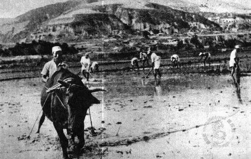

薪火耕耘 · 自力更生 · 艰苦奋斗 · 精神永续

一、历史背景 · 内外夹击的生存危机
1941年，抗日战争进入相持阶段，日军对根据地疯狂“扫荡”，国民党发动第二次反共高潮，对陕甘宁边区实行军事包围 + 经济封锁。
边区脱产人员达7.3万人，粮食缺口16万石，几乎到了“不战而亡”的绝境。
二、核心号召与总方针
毛泽东号召：自己动手，丰衣足食
经济工作总方针：发展经济，保障供给

三、发展五阶段（时间轴）
✅ 萌芽阶段（1938–1939）
✅ 危机爆发（1940底–1941春）
✅ 全面展开（1941–1942）
✅ 成效凸显（1943–1944）
✅ 精神定格（1945七大）
四、典型典范：南泥湾大开发
三五九旅开进荒无人烟的南泥湾，“一把镢头一支枪，生产自给保卫党中央”。
短短数年，把“烂泥湾”变成了“陕北江南”。
五、精神内核 · 永不过时
✅ 战略自主 ✅ 全员实干 ✅ 迎难而上 ✅ 集体共赢 ✅ 创新求变
AI：你好！我是延安精神小助手，你可以问我：
• 大生产运动的意义
• 什么是群众路线
• 自力更生与合作的关系
新时代破解核心技术“卡脖子”
正方：优先自力更生 VS 反方：优先全球合作
正方：核心技术买不来、要不来、讨不来，必须把命脉握在自己手中！
反方：全球合作高效聚智，互助共赢才能更快突破“卡脖子”！
正方：当年边区被封锁，外援断绝；今天科技被卡，更要自力更生！
反方：合作不是依赖，以合作促自主，才是实事求是！
主题：延安的镢头 → 今天的键盘
课程主题：薪火耕耘——延安大生产运动的精神溯源与当代回响
演讲人：张闰婕
指导老师：谭红梅
小组成员：蒋雅鑫、张雅、曾欣欣、周佳美、王美云、吴越、李婉瑜、张闰婕、张朵、张栖宁、王睿祥、吴思铜、杨婧、张博宇、吴琪